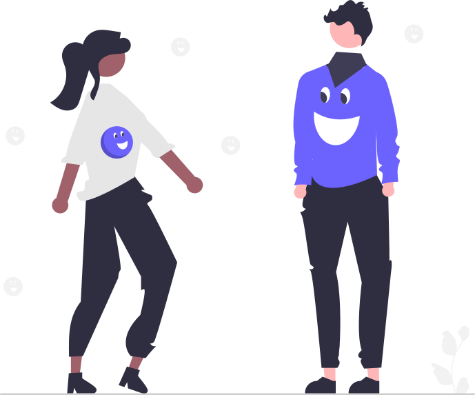

.svg)

MindMap was developed throughout the fall of 2023, during the Design Practice in Human-Centered Design and Development course (HCDD 264). This course allowed me to familiarize myself with the design thinking process.
In a world of rapidly evolving technology and declining mental
health, there is now more than ever a need for easily accessible
mental health resources. Navigating one’s own struggles can be
a very vague and overwhelming experience with an uncertainty
of how to take proper action.
MindMap is a mobile application designed to centralize mental health resources in one convenient space. It offers a private journal, a supportive chat forum, guided meditation exercises, and a personalized therapist search to help users find the right professional for their needs. By providing these tools, MindMap empowers individuals to explore different mental health remedies and promotes a more accessible, positive experience in addressing mental health challenges.
We conducted video ethnography to better understand how users interact with mental health resources and identify areas for improvement. By observing real-life interactions and experiences, we gained valuable insights into user behaviors, preferences, and unmet needs to inform the design and functionality of MindMap. Based on these findings, we identified several design features that could address common issues faced by users:
We conducted a study aimed to understand the mental health challenges faced by college students and how they prefer to find support. We collected information from a variety of people, including students from different college years and family members, to get a wide view of mental health struggles. This helped us design an app that would be helpful for everyone, no matter how big or small their mental health concerns are.
To gather information, we used two methods: anonymous surveys and one-on-one interviews. The surveys had both multiple-choice questions and open-ended questions to learn about people’s experiences and what activities help them feel better. In the interviews, we asked personal questions and followed up based on the answers we received. This mix of methods helped us gather both general data and personal stories that showed how people cope with mental health challenges.
Our interviews and questionnaires helped us understand the needs of people starting their mental health journey. Amanda, one of our interviewees, shared how hard it had been at first to talk about her depression and how an anonymous chat forum would have helped her feel less alone. She and others also highlighted the difficulty of finding therapy that accepted their insurance, which is why we included a professional help locator with filters for insurance. While many of our features, like chat forums and wellness activities, existed elsewhere, our goal was to combine them in one easy-to-use app. Interviewees agreed this would have made seeking help less overwhelming, and they especially appreciated the idea of wellness suggestions appearing randomly, like BeReal, to provide a positive surprise. Making the app user-friendly had been our top priority to help people get the support they needed and track their progress.
During the ideation stage, we created this user flow model to map out how users would navigate the app and interact with its features. This process helped us ensure a seamless and intuitive experience by visualizing each step a user would take to access key functionalities. By addressing potential pain points and streamlining transitions between features, we aimed to design an app that met users' needs effectively and encouraged engagement with mental health resources.
We created this style guide to ensure consistency and clarity throughout the app's design. It defines the icons, colors, fonts, and logo used in the app, making the interface visually appealing and easy to navigate. The blue and green colors were chosen for their calming and approachable feel, aligning with the app’s mental health focus. The typography uses clear, modern fonts like Spotify Circular and ABeeZee to enhance readability, while the icons provide intuitive navigation for key features. The logo, featuring connected brains, symbolizes connection and mental health awareness, tying directly to the app’s purpose. This style guide helps create a cohesive and professional user experience.

During the testing phase, we conducted guided walkthroughs over Zoom to see how users interacted with our app. We asked participants to complete specific tasks, like creating an account, finding a therapist, or writing a journal entry. While they navigated the app, we encouraged them to share their thoughts and feelings out loud so we could understand what worked well and what was confusing. If they got stuck, we observed where they had trouble and asked follow-up questions to learn more. These walkthroughs helped us spot areas for improvement and make changes to ensure the app was easy to use.
After iterating on our original designs, we completed our prototype on Figma.
p